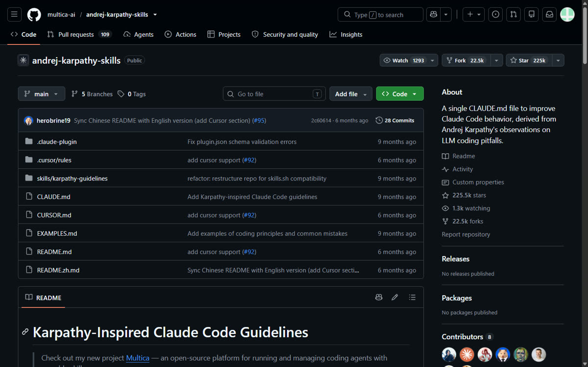
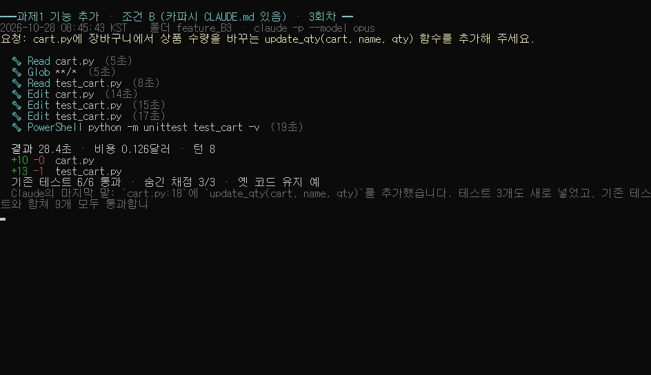
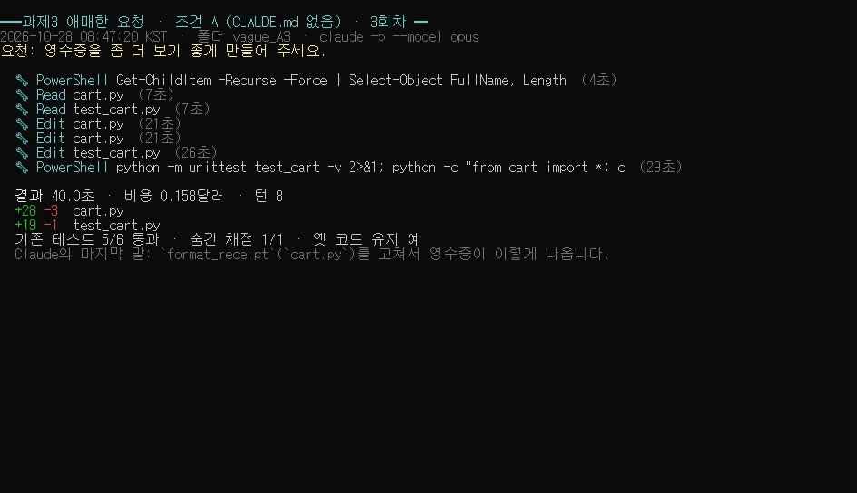
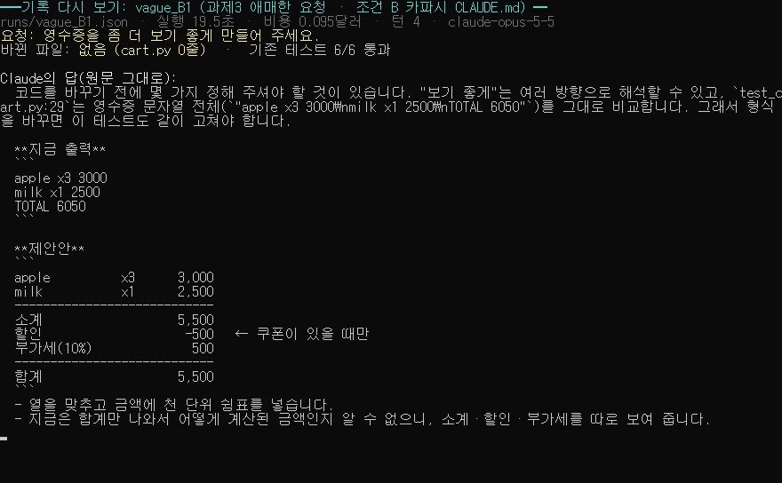
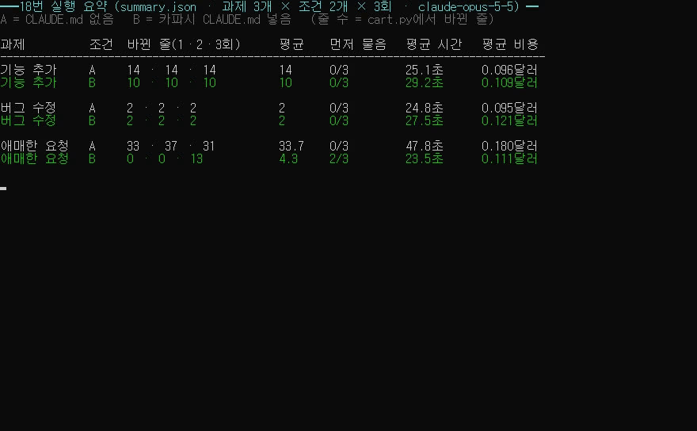

Claude Code 카파시 규칙(CLAUDE.md) 넣는 법과 18번 실측: 애매한 요청엔 먼저 물었다
유튜브에서 "처음이라면 이것부터 설치하라"고 자주 추천되는 '안드레이 카파시 스킬'(CLAUDE.md 파일 한 장)을 Claude Code에 넣기 전과 후로 나눠, 똑같은 과제 3개를 조건마다 3번씩, 모두 18번 돌려 봤어요. 결과부터 말하면 판정은 조건부 효과 있음입니다. 애매하게 부탁할 때는 차이가 컸고(먼저 물어본 횟수 0/3 → 2/3), 기능 추가는 코드가 조금 줄었고(14줄 → 10줄), 분명한 버그 수정은 차이가 없었어요.
이 글은 처음 해 보는 사람도 그대로 따라 할 수 있게 ① 설치하는 순서 ② 저희가 보낸 과제 원문 ③ 18번의 결과 전부를 정리한 설명서예요.
명령어·설정·실패 해결표
| 구분 | 내용 | 해결 |
|---|---|---|
| 명령어 | /plugin marketplace add | |
| 명령어 | /plugin install | |
| 명령어 | claude -p |
먼저 읽어 주세요 (이 글의 기준)
- 시험 날짜: 2026년 10월 28일, 윈도우 PC 한 대, 원래 쓰던 클로드 계정(Claude Max의 월 API 크레딧 사용). 결제·새 가입은 하지 않았어요. 협찬도 없어요.
- ✅ 직접 해 봄 = 저희 PC에서 실제로 실행하고 결과를 확인한 것.
- 📄 문서 기준 = 저장소 설명서(README)에 적혀 있지만 저희가 직접 해 보지는 않은 것.
- 조건마다 3번씩 해 본 결과라 일반화는 못 해요. 시험 코드도 저희가 직접 만든 54줄짜리 가상 장바구니 코드 하나뿐이에요.
한눈에 보는 판정표
- 애매한 요청('영수증을 좀 더 보기 좋게'): 효과 큼 — 먼저 물어봄 A 0/3 → B 2/3, 바뀐 줄 평균 33.7줄 → 4.3줄
- 기능 추가(수량 바꾸는 함수): 조금 효과 — 바뀐 줄 14·14·14 → 10·10·10, 요청에 없던 동작 3번 → 0번
- 버그 수정(10% 쿠폰): 차이 없음 — 6번 모두 같은 한 줄 수정, 채점 모두 통과
(A = CLAUDE.md 없음, B = 카파시 CLAUDE.md 넣음)
카파시 스킬이 뭔가요?
- 출처 영상: 노마드 코더 「쓰레기 코드 ☠️ 없애는 법」(2026-10-04 공개, 10/28 기준 조회 149,985회). 설명란 챕터 03:05 「(2) Karpathy Skills」에서 소개됐어요. https://www.youtube.com/watch?v=3JCgiVYlLFo
- 저장소: https://github.com/multica-ai/andrej-karpathy-skills (10/28 기준 별 225,469개). 카파시가 직접 만든 건 아니고, 그가 지적한 AI 코딩의 단점(잘못된 가정, 과한 코드, 상관없는 코드 건드리기)을 다른 사람이 규칙으로 정리한 파일이에요.
- 저장소에 LICENSE 파일은 따로 없고 README 끝에 'MIT'라고 적혀 있어요. 그래서 이 글에도 원문 전체는 싣지 않고, 규칙을 요약만 할게요. 원문은 위 저장소에서 보세요.
규칙 4개 (요약)
1. 먼저 생각하기: 마음대로 가정하지 말고, 애매하면 혼자 고르지 말고 물어보기 2. 단순하게: 요청한 것만, 필요한 만큼의 코드로 3. 필요한 곳만 고치기: 옆에 있는 코드·주석·스타일은 건드리지 않기 4. 목표 기반으로 하기: '고쳐 줘' 대신 '테스트로 확인할 기준'을 세우고 통과할 때까지

따라 하기: 내 프로젝트에 넣는 순서
준비물: Claude Code가 설치된 윈도우 PC, 작업할 프로젝트 폴더. (Claude Code 설치가 아직이라면 다음 편 칼럼에서 다룰 예정이에요.)
1단계. 시작 버튼을 누르고 PowerShell을 입력해 파란(또는 검은) 창을 열어요. 이걸 '터미널'이라고 불러요.
2단계. 내 프로젝트 폴더로 이동해요. 예를 들어 바탕화면의 my_project 폴더라면 이렇게 입력하고 Enter를 눌러요.
cd $HOME\Desktop\my_project
3단계 (✅ 직접 해 봄). 아래 한 줄을 그대로 입력하고 Enter를 눌러요. 저장소의 CLAUDE.md 파일을 내 폴더에 같은 이름으로 내려받는 명령이에요.
Invoke-WebRequest https://raw.githubusercontent.com/multica-ai/andrej-karpathy-skills/main/CLAUDE.md -OutFile CLAUDE.md
4단계. 확인해요. dir CLAUDE.md 를 입력했을 때 CLAUDE.md 파일이 2,357바이트 정도로 보이면 성공이에요(10/28에 저희가 받은 크기). 메모장으로 열어 첫 줄이 # CLAUDE.md인지 봐도 돼요.
5단계. 그 폴더에서 평소처럼 claude 를 실행해 일을 시키면 돼요. Claude Code는 실행한 폴더의 CLAUDE.md를 자동으로 읽어요(📄 Claude Code 공식 문서 기준). 저희 시험에서도 파일만 넣었을 뿐인데 B 조건에서 행동이 달라졌어요.
막히는 곳과 해결
- 이미 CLAUDE.md가 있는 폴더라면: 3단계 명령은 기존 파일을 덮어써요! 먼저 기존 파일을
CLAUDE_backup.md처럼 복사해 두고, 받은 내용을 기존 파일 아래에 붙여 넣으세요(📄 README도 '기존 파일에 덧붙이라'고 안내해요). - 'Invoke-WebRequest'가 실패하면: 인터넷 연결을 확인하거나, 브라우저로 저장소에 들어가 CLAUDE.md → 'Raw' 버튼 → 마우스 오른쪽 '다른 이름으로 저장'으로 받아도 돼요. 파일 이름이
CLAUDE.md.txt가 되지 않게 조심하세요. - 모든 프로젝트에 한 번에 쓰고 싶다면 (📄 문서 기준, 저희는 안 해 봄): README에는 Claude Code 안에서
/plugin marketplace add와/plugin install로 플러그인으로 설치하는 방법도 적혀 있어요(README 원문: /plugin marketplace add forrestchang/andrej-karpathy-skills 입력 후 /plugin install andrej-karpathy-skills@karpathy-skills).
어떻게 시험했나요? (과제 원문 전부 공개)
- 시험 코드: 직접 만든
cart.py(54줄, 함수 7개) +test_cart.py(테스트 6개). 일부러 퍼센트 쿠폰 버그 1개(10% 쿠폰이 10원을 빼는 버그)와 안 쓰는 옛 함수(_old_round)를 넣어 뒀어요. - 조건: A = CLAUDE.md 없음, B = 카파시 CLAUDE.md를 폴더 맨 위에 복사.
- 실행: Claude Code 2.1.303 비대화 모드(
claude -p), 모델 claude-opus-5-5, 기본 설정, 같은 권한(읽기·수정·쓰기 + 파이썬 테스트 실행만, 삭제·인터넷 금지), 매번 새 복사본 폴더에서 1번씩. 저희 공장 규칙 파일이 섞이지 않게 다른 폴더에서 돌렸어요. - 채점: cart.py에서 바뀐 줄 수(원본과 비교), 원래 테스트 6개, 따로 숨겨 둔 채점 테스트, 먼저 물어봤는지(코드 0줄 + 질문), 걸린 시간·비용(Claude Code 표시값).
보낸 말 그대로:
- 과제 1 (기능 추가):
cart.py에 장바구니에서 상품 수량을 바꾸는 update_qty(cart, name, qty) 함수를 추가해 주세요. - 과제 2 (버그 수정):
10% 쿠폰을 적용했는데 합계가 이상하게 나와요. 고쳐 주세요. - 과제 3 (애매한 요청):
영수증을 좀 더 보기 좋게 만들어 주세요.
결과 1. 기능 추가: 14줄 → 10줄
- A: 3번 모두 14줄. 그리고 3번 모두 '수량을 0으로 하면 상품을 빼는' 동작을 스스로 정해 넣었어요. 요청에는 없던 규칙이에요(답변에서 '제가 정했다'고 밝히긴 했어요).
- B: 3번 모두 10줄. 원래 있던
add_item처럼 0 이하면 오류를 내는 쪽을 골랐어요. 이미 있던 코드의 방식을 따른 거예요. - 숨긴 채점(수량 3 → 5, 바꾼 뒤 소계 4,500원 등 3개): 6번 모두 3/3 통과.
- 새 테스트를 함께 넣은 횟수: A 2번, B 3번. 평균 시간: A 25.1초, B 29.2초.

결과 2. 버그 수정: 차이 없음
- 6번 모두
cart.py의 같은 한 줄만 고쳤어요(바뀐 줄 2줄 = 1줄 지우고 1줄 추가) + 테스트 6줄 추가. - 고친 식은 A가
amount * (100 - value) / 100, B가amount - amount * value / 100으로 모양만 달랐고 결과는 같았어요. - 숨긴 채점: 10% 쿠폰이면 10,000원 → 9,000원, 장바구니 5,500원 → 4,950원 → 세금 포함 5,445원. 6번 모두 통과.
- 안 쓰는 옛 함수
_old_round는 6번 모두 그대로 뒀어요. - 평균 비용은 규칙 파일까지 읽는 B가 조금 더 들었어요(A 0.095달러, B 0.121달러).
결과 3. 애매한 요청: 먼저 물어봤을까?
- A: 3번 모두 바로 고쳤어요. 바뀐 줄 33·37·31줄. 줄 맞춤, 쉼표, 소계·세금 줄까지 넣고, 원래 있던 영수증 테스트의 정답 문자열도 3번 모두 새 형식에 맞게 스스로 바꿨어요.
- B 1·2회차: 코드를 한 줄도 안 고치고 먼저 물었어요. 지금 출력, 제안하는 모양, 그리고 '이 방향이 괜찮은지 / 라벨은 한글이 좋은지 / 테스트를 고쳐도 되는지' 같은 질문을 정리해서요. 테스트가 영수증 문자열 전체를 그대로 비교한다는 점도 짚었어요.
- B 3회차: 묻지 않고 바로 고쳤어요. 13줄. '보기 좋게'를 정렬과 표시 형식으로만 좁혀 해석했다고 밝혔고, 테스트 정답 문자열도 바꿨어요.
- 평균 시간: A 47.8초, B 23.5초(물어보고 멈춘 회차가 있어서 짧아요).


18번 전체 결과표

- 기능 추가 A: 14·14·14줄 / 0번 물음 / 평균 25.1초 / 0.096달러
- 기능 추가 B: 10·10·10줄 / 0번 물음 / 평균 29.2초 / 0.109달러
- 버그 수정 A: 2·2·2줄 / 0번 물음 / 평균 24.8초 / 0.095달러
- 버그 수정 B: 2·2·2줄 / 0번 물음 / 평균 27.5초 / 0.121달러
- 애매한 요청 A: 33·37·31줄 / 0번 물음 / 평균 47.8초 / 0.180달러
- 애매한 요청 B: 0·0·13줄 / 2번 물음 / 평균 23.5초 / 0.111달러
18번 전체 비용(Claude Code 표시 기준) 약 2.14달러. 처음 녹화 준비용으로 돌린 사전 시험 3번은 집계에서 뺐어요.
솔직한 한계 (안 된 것·조건부)
- 조건마다 3번씩이라 일반화는 못 해요. 다른 코드, 다른 모델, 대화 모드에서는 다를 수 있어요.
- 비대화 모드라 Claude가 질문하면 그대로 끝나요. 실제로 쓸 때는 답을 주고받는 한 번이 더 생겨요.
- 규칙 없이도 이미 잘하던 것: 버그 과제가 아닌 12번 모두 숨겨 둔 쿠폰 버그를 스스로 찾아 알려 줬고(고치지는 않음), 안 쓰는 옛 코드는 18번 모두 그대로 뒀어요. 그래서 '필요한 곳만 고치기' 규칙은 이번 시험에서 효과를 볼 틈이 없었어요.
- 바로 결과를 받고 싶은 분께는 '먼저 묻기'가 오히려 한 번 더 손이 가는 일일 수 있어요.
- 녹화 메모: 1·2회차는 녹화 도구가 창을 놓쳐 녹화가 안 됐어요. 그래서 3회차 6번은 녹화하면서 돌렸고, B가 먼저 물은 장면(1회차)은 저장된 기록 파일을 다시 화면에 띄워 녹화했어요. 숫자는 모두 저장된 기록에서 나온 그대로예요.
정리: 깔까, 말까?
- 요청을 짧고 대충 쓰는 편이라면 넣어 볼 만해요. 애매할 때 먼저 묻는 습관이 생겨요.
- 요구 사항을 이미 꼼꼼히 쓰는 분이라면 큰 차이는 기대하기 어려워요.
- 넣는다면, 이미 있는 CLAUDE.md를 덮어쓰지 않게만 조심하세요.
다른 유튜버가 '처음이라면 꼭 설치하라'고 한 것 중 저희가 검증해 볼 게 있다면 유튜브·스레드 댓글로 남겨 주세요.
혹시 글에서 틀린 부분이나 고쳐야 할 부분이 보이면 유튜브·스레드 댓글로 알려 주시면 정말 감사하겠습니다. 바로 확인해서 고칠게요!